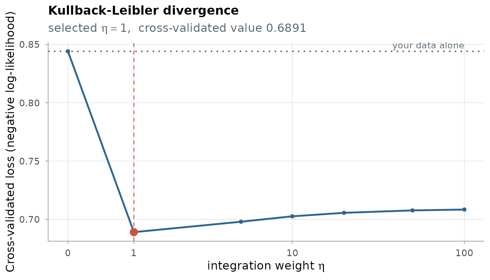
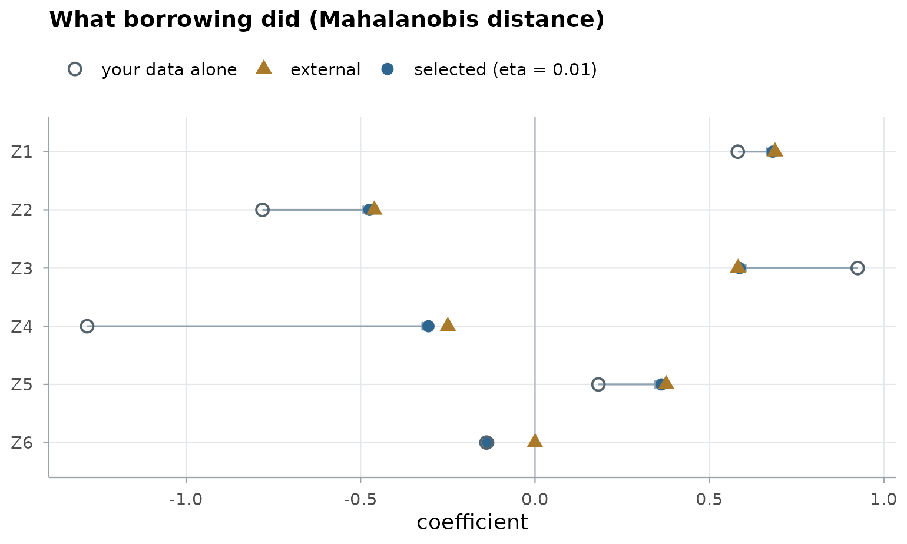

Discrete-time and neural targets
discrete_neural.RmdThe framework does not fix the target model. This page covers the two targets beyond the Cox model: the grouped-time model of an outcome recorded in intervals, and a neural-network risk score. Both enter the same objective, \(-\ell(\theta) + \eta\,\mathcal{B}_G(\theta)\).
The grouped-time model
Subject \(i\) is at risk in intervals \(1, \dots, t_i\); the event, if any, happens in interval \(t_i\). The hazard of interval \(k\) is
\[ h_{ik} = g^{-1}\!\left(\gamma_{s(i)k} + \mathbf z_i^\top \boldsymbol\beta\right), \]
with one baseline parameter \(\gamma_{sk}\) per stratum and interval and
the complementary log-log link (link = "cloglog", the
grouped proportional-hazards model, whose \(\boldsymbol\beta\) has the meaning of a Cox
model’s) or the logit link. The log-likelihood is a Bernoulli likelihood
over the person-intervals at risk. An interval in which no training
subject has the event has a maximum-likelihood hazard of zero; its
baseline parameter is held at a floor corresponding to a hazard of \(10^{-8}\) instead of diverging.
ExampleData_discrete holds a cohort of 150 subjects
followed for six intervals, an independent test cohort, and a registry:
its records, and the model it published from them.
library(BregSurv)
data(ExampleData_discrete)
tr <- ExampleData_discrete$train
table(last_interval = tr$interval, event = tr$status)
#> event
#> last_interval 0 1
#> 1 27 7
#> 2 21 12
#> 3 21 3
#> 4 19 6
#> 5 20 3
#> 6 10 1
target <- target_discrete(interval = tr$interval, event = tr$status, z = tr$z)
target
#> Target: discrete-time model, 6 intervals, cloglog link
#> 150 subjects, 6 covariates, 32 eventsThe three divergences on a discrete target
Kullback–Leibler: absolute risk. The divergence is
taken between the external and target hazards of every interval at risk.
It reduces to the Bernoulli likelihood with each outcome replaced by a
soft target, \((y_{ik} + \eta\,\tilde
h_{ik})/(1+\eta)\), exactly as the Cox estimator replaces each
event indicator; this is the method of Wang et
al. (2025). It needs the external model’s interval hazards \(\tilde h_{ik}\), which a Cox model gives
together with its baseline hazard, so the release is
release_model(): the coefficients with the baseline
cumulative-hazard increments over your intervals, or the interval
hazards themselves (hazard =, one row per subject).
registry_model <- release_model(beta = ExampleData_discrete$beta_external,
baseline = ExampleData_discrete$baseline_external)
fit_kl <- cv.bregsurv(target, registry_model, divergence = "kl")
plot(fit_kl)
A coefficient vector alone says nothing about interval hazards, so
release_coef() cannot inform this divergence on a discrete
target.
Mahalanobis. Under the complementary log-log link the coefficients compare directly with a Cox model’s, so the published coefficients and their precision matrix enter as for a Cox target:
registry_coef <- release_coef(ExampleData_discrete$beta_external, Q = ExampleData_discrete$Q_external)
fit_m <- cv.bregsurv(target, registry_coef, divergence = "mahalanobis")Composite likelihood. The registry’s records, on the same intervals, enter with weight \(\eta\) and their own baseline parameters:
ex <- ExampleData_discrete$external
registry_records <- release_records(ex$z, interval = ex$interval, event = ex$status)
fit_c <- cv.bregsurv(target, registry_records, divergence = "composite")Every discrete-time fit is scored by the same criterion: the held-out
negative log-likelihood per subject of the grouped-time model, pooled
over the folds. With the same seed, they share one
partition, so their values compare directly, together with your data
alone:
own <- cv.bregsurv(target)
round(c(your_data_alone = own$value, kullback_leibler = fit_kl$value,
mahalanobis = fit_m$value, composite = fit_c$value), 4)
#> your_data_alone kullback_leibler mahalanobis composite
#> 0.8442 0.6891 0.8155 0.8130
plot(fit_m, type = "coefficients")
The estimators behind the fits
cv.bregsurv() hands a linear discrete-time target to one
of three families of estimators, parallel to the Cox and nested
case–control ones, and returns exactly their result:
| divergence | estimator | ridge | lasso / elastic net |
|---|---|---|---|
| Kullback–Leibler |
discretekl(), cv.discretekl()
|
discretekl_ridge(),
cv.discretekl_ridge()
|
discretekl_enet(),
cv.discretekl_enet()
|
| Mahalanobis |
discrete_MDTL(), cv.discrete_MDTL()
|
discrete_MDTL_ridge(),
cv.discrete_MDTL_ridge()
|
discrete_MDTL_enet(),
cv.discrete_MDTL_enet()
|
| composite likelihood |
discrete_indi(), cv.discrete_indi()
|
discrete_indi_ridge(),
cv.discrete_indi_ridge()
|
discrete_indi_enet(),
cv.discrete_indi_enet()
|
fit_kl$engine
#> [1] "cv.discretekl"
direct <- cv.discretekl(z = tr$z, delta = tr$status, interval = tr$interval,
beta = ExampleData_discrete$beta_external,
baseline = ExampleData_discrete$baseline_external,
etas = fit_kl$path$eta, seed = fit_kl$seed)
identical(direct$best$best_value, fit_kl$value)
#> [1] TRUEThey take the arguments of their Cox counterparts with
interval in place of time. Fits use Fisher
scoring with the baseline parameters profiled out, and proximal Newton
with coordinate descent under an \(\ell_1\) penalty, in C++. The objective is
scaled per subject, as for the Cox estimators, so \(\eta\) has the same meaning on both
targets.
Predictions are interval hazards or survival at the end of each interval:
te <- ExampleData_discrete$test
round(predict(fit_kl, te$z[1:3, ], type = "survival"), 3)
#> interval_1 interval_2 interval_3 interval_4 interval_5 interval_6
#> baseline 0.969 0.924 0.886 0.817 0.749 0.682
#> baseline 0.983 0.959 0.938 0.899 0.859 0.818
#> baseline 0.981 0.953 0.929 0.884 0.839 0.793Neural-network risk scores
score = nn_score() replaces \(\mathbf z^\top\boldsymbol\beta\) by a
feed-forward network. Only the Kullback–Leibler divergence is defined
for it, since the other two compare coefficients. The neural targets
need the torch package, so the code below is not run
here.
- On a discrete target the network outputs one logit per interval, a logistic-hazard model, trained on the soft targets above: the external model is distilled into the network, and \(\eta = 0\) is the network trained on your data alone.
- On a Cox target the network outputs a risk score, trained on the partial likelihood with each event indicator blended with the external pseudo-event weight. It is scored by the same cross-validated partial-likelihood loss as the linear Cox fits, on the same folds, so a network and a linear model can be compared.
install.packages("torch"); torch::install_torch() # once
spec <- nn_score(hidden = c(128, 128, 128, 128), dropout = 0.1)
target_nn <- target_discrete(interval = tr$interval, event = tr$status, z = tr$z, score = spec)
net <- cv.bregsurv(target_nn, registry_model)
net$eta; plot(net)The training protocol: within each fold, an event-stratified 20% of the training part is held out for early stopping, the covariates are standardized on the rest, and every candidate starts from the same initialization. The learning rate is chosen first, at \(\eta = 0\), then \(\eta\); the final network is trained on all the data for the median best epoch of the selected setting. The default network has four residual blocks of width 128, each a linear layer, layer normalization, ReLU and dropout.
Networks are random even with a seed fixed, across platforms and
versions of torch; on one machine and one version, a fixed
seed reproduces the fit.